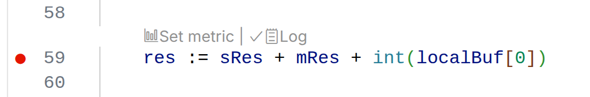

Dynamic Logging
Inject log statements anywhere in your code. Capture variable values, function arguments, and return values.

CodeBull is a VS Code extension that brings dynamic observability to your Go applications. It allows developers to inject logs, metrics, and traces into a running application without rewriting code, rebuilding binary, or restarting the process.
Traditional debugging often involves adding print statements, recompiling, and restarting the app. CodeBull eliminates this friction by leveraging runtime instrumentation techniques.
The ability to modify the behavior of a running program by injecting code at specific points (e.g., function entry/exit, specific lines). CodeBull uses this to insert observability hooks safely.
Inject log statements anywhere in your code. Capture variable values, function arguments, and return values.
Monitor the performance and behavior of your application in real-time. Add counters to track how often a line of code is executed, or gauges to track the value of a variable over time.
Generate CPU and memory profiles on-demand directly from VS Code. Visualize flame graphs to identify bottlenecks.